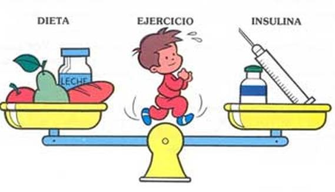
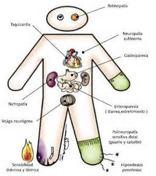

Tratamiento
El propósito del tratamiento es aliviar los síntomas, mantener el control metabólico, prevenir las complicaciones, mejorar la calidad de vida y reducir la mortalidad.

Las complicaciones al no recibir tratamiento son:
- Hospitalización
- Recaídas
- Pie diabético
- Descompensación
- Muerte


Manejo no farmacológico
Manejo farmacológico
Vigilancia de complicaciones
Duración del tratamiento
Manejo no farmacológico
Incluye:
- Control de peso
- Plan alimenticio
- Educación del paciente y su familia
- Auto monitoreo
- Grupos de ayuda